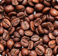
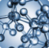

Megveszem a visszér elleni krémet, amely szállítható.
Egészséges erek és kecses mozgás
- Visszér megelőzésére és terápiájára
- Javítja a vérkeringést
- Enyhíti az olyan tüneteket, mint például: a gyulladás, nehézkesség, görcsök és duzzanat
- A Stockholmi Egészségügyi Akadémia flebológusai által igazolt hatékonyság
A statisztikák szerint minden negyedik emberből egynek vénás patológiája van. A lábak nehézsége, fájdalma és duzzanata férfiaknál és nőknél egyaránt előfordul. A krém természetes összetevőkből áll, kezeli a vénás reflux minden tünetét, és már az első használattól kezdve javítja az ereket. A készítmény hidratálja és beszívódik a bőrbe, és gyorsan enyhíti a fájó, duzzadt és fáradt lábakat. Ezenkívül erősíti az érfalakat és javítja az éráteresztő képességet.
Mi a visszér és mi okozza?
A visszerek a test alsó felének vénáinak kóros elváltozása, amely kiterjedésükkel, deformációjukkal, a szelepes apparátus megszakadásával, rossz átjárhatóságukkal és a vér visszaáramlásával jár.
A visszér okai:
- Ülő, mozgásszegény életmód
- A fizikai aktivitás hiánya
- A lábak nehéz terhelése
- Öröklött gyenge érfalak
- Túlsúly
- Hormonális egyensúlyhiány
- Terhesség
Hogyan lehet felismerni a visszereket. Az 5 fő tünet
Kék színű, kiálló vénacsomók nem jelennek meg azonnal a vénás elégtelenségnél. A legtöbb esetben ezt megelőzi:
- hirtelen lábgyengeség,
- viszketés, égő érzés, izomgörcsök a lábakban,
- duzzanat, dudorok,
- a láb bőrszínének megváltozása, véraláfutások,
- sötétkék pókhálós erek.
A visszerek veszélye, kockázata és hosszú távú hatásai
A számos tünet mellett a visszerek a véráramlás zavaraival is járnak. Az érbillentyűk nem zárnak többé olyan szorosan, mint korábban. Ennek következtében az erekben lévő vér a test alsó felébe esik, pang, és fájdalmas gócokat és fekélyeket képez. Néha rosszabb esetben a fertőzött vér egy végtag amputációjához vezethet, vagy trombózis alakulhat ki, ami halálhoz vezethet.
Egészséges és szép lábak krémmel
- 93%-kal kevesebb gyulladásos marker a vérben
- 89%-kal csökkent a vénák mérete
- 97%-os enyhülés a fájdalom, a fáradtság és a duzzanat terén
A azért van, hogy lábai könnyűek, szépek és egészségesek legyenek!
2019-ben a Stockholmi Egészségügyi Akadémia flebológusai csatlakoztak ahhoz a kutatócsoporthoz, amely megalkotta a krém forradalmi formuláját. A elismerten az egyetlen hatékony termék, amely a visszerek egy adott területének kezelésére irányul. A krém használatának teljes intervalluma teljesen rendbe hozza a sérült vénákat. Korábban ez csak invazív műtéttel és hatóanyagok felhasználásával volt lehetséges. A mindössze 40 nap alatt képes javítani az erek egészségét:
-

Vadgesztenye kivonat
Glikozidokat, az aesculint és aescint tartalmaz, amelyek az alábbiak révén teszik egészségessé a vénákat: erősítik az érfalakat; felgyorsítják a véráramlást; erőteljes nyugtató hatással vannak a vérömlenyekre, dudorokra és fekélyekre; csökkentik a vér viszkozitását és a trombózis kialakulásának kockázatát.
-
Kamilla virágkivonat
Gyulladáscsökkentő és görcsoldó hatású, növeli az erek rugalmasságát és javítja a véráramlást.
-
Csalán kivonat
Nagy mennyiségű növényi savat és flavanoidot tartalmaz. Enyhíti a gyulladást, erősíti az ereket, biztosítja az erek tónusát, megszabadít a vér pangásától.
-
Mentol
Hűsít, csökkenti a vér viszkozitását, elősegíti a zsírbontást, javítja a véráramlást és enyhíti a duzzanatokat.
-

Koffein
A koffein kiváló vénás fájdalomcsillapító. Serkenti a véráramlást, egészségessé és rugalmassá teszi az ereket, valamint egészségesen tartja a láb bőrét.
-

Panthenol
Táplálja és hidratálja a bőrt. Felgyorsítja a sebgyógyulást.
-
Vörösbors kivonat
A C-vitamin és bioflavonoidok nagyszerű forrása. Normálisan tartja a vérkeringést és fájdalomcsillapítást biztosít.
-
Féregfű kivonat
Erősíti az ereket; javítja azok rugalmasságát; csökkenti a hosszú séták okozta megterhelést; megakadályozza a trombózis kialakulását; és enyhíti a pók- és hálóvénákat.
Krém a Stockholmi Egészségügyi Akadémia vezető flebológusainak kutatásai alapján fejlesztették ki. Az étrend-kiegészítő az összes szükséges klinikai vizsgálaton átesett, amelyet szabadalmak és a gyógyszerkiegészítők minőségellenőrzésének nemzetközi szövetségétől származó tanúsítványok igazolnak.
Hogyan kell használni a krémet
Óvatosan masszírozzon be a krémből egy kis mennyiséget a sérült területre. Reggel és este a teljes felszívódásig (3-5 perc) alkalmazza a krémet.
Felhasználói megjegyzések
A nem regisztrált felhasználóknak nincs engedélye a hozzászólások írásához
Hantos Krisztina
Kiváló bőrápoló termék. Már másodszorra vettem a nagymamámnak, nagyon szereti
VálaszEndre
Hallottam erről a krémről. Minden sportoló használja. Működik és tényleg hatékony.
VálaszJakabos Amélia
Szerezd be a krémet, és ne habozz tovább! Kezdd 2 tubussal, ha már duzzadtak az ereid. Nem mondhatom, hogy a visszerek azonnal eltűntek. Először is, a lábamban lévő nehézkedés tűnt el. Még a 8-10 cm-es magas sarkú cipőmet is felvettem. A sarkamban megszűnt a duzzanat. Körülbelül egy hónappal később a kék pókhálós vénáim eltűntek. És,, a csomók meg a duzzanatok a lábamon mindössze kb. 4 hónap alatt eltűntek. De hatalmasak voltak. Mindenkinek ajánlom, hogy próbálja ki.
VálaszMelinda
Nekem is van visszerem és még csak 27 éves vagyok. A flebológusok csak vállat vontak és azt mondták, hogy nem tudnak semmit tenni. Nagyon szeretném kipróbálni, talán mégiscsak segít rajtam.
VálaszBalázs
Én rögtön 3 tégellyel akarok venni belőle. Kaphatnék kedvezményt?
VálaszSanyi, internetes áruházi tanácsadó Egészségélet
Most akciósan. krém kedvezményesen 50% .
VálaszKinley
Naponta duzzad a lábam. Ezenkívül időről időre fáj. Nincs időm orvosokra, ezért megrendeltem a krémet. Majd én magam kipróbálom.
VálaszJanka
Én étteremvezetőként dolgoztam. Napi 12-16 órát töltöttem talpon, néha teljesen ülés nélkül. Eleinte tetszett ez az életmód, mert garantáltan nem hízok, de évekkel később ez megviselte a lábaimat. Állandóan fájni kezdtek, és a fájdalomcsillapítók rabja lettem. Ezután a semmiből kék pókhálós erek jelentek meg a lábamon, amit szörnyű fájdalom követett, amitől néha csak izomba adott injekcióval tudtam megszabadulni. Az élet maga volt a pokol. Az orvosok csak a vállukat vonogatták, és a vágást javasolták. Hála az égnek, hogy ebbe nem mentem bele, és hallottam a krémről! Nem mondhatom, hogy azonnal hatott, de 3 hónap után az állapotom óriási mértékben javult. Már semmi sem zavar.
Válasz